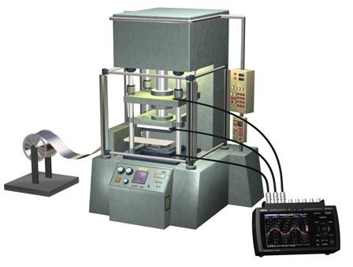

Building Automation
Industrial Automation
Power Automation & Safety


Bangladesh Distributor
Data Loggers to Measure Equipment Maintenance Data
Case Number 411
last update: May 17, 2011
Handheld data loggers are used to easily measure pressure, temperature, AC power, and thermo data pulse data near equipment.

Know-How
Handheld data recorders are used to easily collect equipment diagnosis data, which was previously performed with large measurement devices.
Benefit / Efficiency
Sequential data measurements of eight channels of voltage, current, and temperature are taken at a speed of up to 10 microseconds. The large screen enables viewing measurements as a graph without connecting to a computer.
-
- Work / Process
-
 Inspection / Measurement
Inspection / Measurement
-
- Product Category
-
Data Logger
Use Products
About this Application Case
Related Contents
- Power Supplies / In Addition
- Data Logger
Applications
- Industry
- Automotive / Machine Tools / Robotics
- Data Loggers to Measure Equipment Maintenance Data